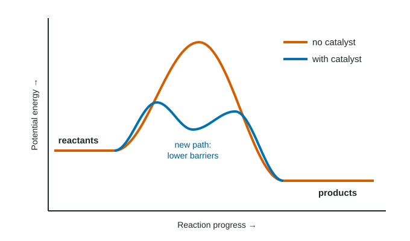

Catalysis
A catalyst speeds a reaction by providing a different mechanism with lower activation energies.
Part 1 · Hook
Why this matters
Part 2 · Before you start
What this builds on
Part 3 · Prerequisite check
Quick check before you start
1. In a mechanism, an intermediate is:
- made in one step and used in a later step
- used in one step and made in a later step
- a reactant in the overall equation
- the top of an energy barrier
Show the answer
An intermediate is formed, then consumed.
- Correct: made in one step and used in a later step:
- used in one step and made in a later step:
- a reactant in the overall equation:
- the top of an energy barrier:
2. A lower activation energy at the same temperature means:
- more collisions succeed, so the reaction is faster
- fewer collisions happen
- the products are lower in energy
- the molecules move faster
Show the answer
More molecules have at least Ea, so more collisions are effective.
- Correct: more collisions succeed, so the reaction is faster:
- fewer collisions happen:
- the products are lower in energy:
- the molecules move faster:
Part 4 · See it
See it first

Part 5 · Step by step
How it works, step by step
- A catalyst takes part in an early step of a new mechanismthe reaction goes by a different set of elementary steps
- The new steps have lower barriers than the uncatalyzed stepmore collisions succeed at the same temperature, so the rate rises
- The catalyst is remade in a later stepit is not used up and cancels from the overall equation
- The reactant and product levels are unchangedthe overall energy change and the final amount of product stay the same
Part 6 · Key ideas
Key ideas
- A catalyst speeds a reaction by providing a new mechanism with lower barriers. It is used in one step and remade in a later step.
- Catalyst: used, then remade. Intermediate: made, then used.
- A catalyst does not change the overall energy change or the final amount of product, and it speeds the forward and reverse reactions alike.
- Kinds: homogeneous, heterogeneous (surface), acid-base and enzymes.
Part 7 · Misconception
A common mistake
The wrong idea: A catalyst and an intermediate are the same thing, since both cancel out of the overall equation.
What actually happens: A catalyst is there at the start, is used in an early step and is remade later. An intermediate is not there at the start: it is made in an early step and used later.
Part 8 · Check yourself
Check yourself
Exam-style questions. Anything you miss goes into your review queue.
Model
Hydrogen peroxide with iodide ions
Hydrogen peroxide breaks down slowly on its own: 2 H₂O₂(aq) → 2 H₂O(l) + O₂(g). Adding a little potassium iodide makes it fizz quickly. A proposed mechanism:
- H₂O₂ + I⁻ → H₂O + IO⁻ (slow)
- H₂O₂ + IO⁻ → H₂O + O₂ + I⁻ (fast)
1. In this mechanism, what is the role of I⁻?
- A catalyst: used in step 1 and remade in step 2
- An intermediate: made in step 1 and used in step 2
- A reactant: used up as the reaction goes
- A product: made in step 2
Show the answer
I⁻ is a reactant in step 1 and a product in step 2, so it is consumed and then regenerated, and it does not appear in the overall equation: a catalyst.
- Correct: A catalyst: used in step 1 and remade in step 2: Right: consumed first, regenerated later.
- An intermediate: made in step 1 and used in step 2: This is the classic mix-up. An intermediate is made first and then used; I⁻ is used first and then made.
- A reactant: used up as the reaction goes: I⁻ is regenerated in step 2, so it is not used up.
- A product: made in step 2: I⁻ is also used in step 1, so it is not just a product; it was there at the start.
2. Which species is an intermediate?
- IO⁻
- I⁻
- H₂O₂
- O₂
Show the answer
IO⁻ is made in step 1 and used in step 2, and it was not present at the start.
- Correct: IO⁻: Right: made, then used.
- I⁻: I⁻ is used, then remade: the catalyst.
- H₂O₂: H₂O₂ is the reactant, used in both steps.
- O₂: O₂ is a product.
3. What rate law does the mechanism predict?
- rate = k[H₂O₂][I⁻]
- rate = k[H₂O₂]²
- rate = k[H₂O₂][IO⁻]
- rate = k[H₂O₂]
Show the answer
The slow first step sets the rate: rate = k[H₂O₂][I⁻]. A catalyst can appear in a rate law, because its concentration is set by the experimenter.
- Correct: rate = k[H₂O₂][I⁻]: Right: from the slow step, catalyst included.
- rate = k[H₂O₂]²: That would match the overall coefficients, which is not how rate laws are found.
- rate = k[H₂O₂][IO⁻]: IO⁻ is an intermediate and is in the fast step.
- rate = k[H₂O₂]: I⁻ is a reactant in the slow step, so it must appear.
4. A student says, "I⁻ is in the rate law, so it must be a reactant that is used up." Which evidence refutes this?
- The two steps sum to an equation without I⁻; it is remade
- IO⁻ does not appear in the rate law
- The reaction fizzes more when KI is added
- The rate law is first order in H₂O₂
Show the answer
Adding the steps gives 2 H₂O₂ → 2 H₂O + O₂; I⁻ cancels because it is used in step 1 and remade in step 2. Being in the rate law only means the slow step involves it.
- Correct: The two steps sum to an equation without I⁻; it is remade: Right: I⁻ cancels from the sum, so it is not consumed.
- IO⁻ does not appear in the rate law: That is about the intermediate, not about I⁻.
- The reaction fizzes more when KI is added: That shows I⁻ speeds the reaction, not whether it is used up.
- The rate law is first order in H₂O₂: The order in H₂O₂ says nothing about whether I⁻ is consumed.
Graph
With and without a catalyst
Energy profiles for the same reaction by two pathways at the same temperature. Reaction progress has no units.
UncatalyzedCatalyzed
Data table
| Reaction progress | Uncatalyzed | Catalyzed |
|---|---|---|
| 0 | 60 | 60 |
| 1 | 60 | 60 |
| 2 | 60 | 60 |
| 3 | 68.4 | 76.3 |
| 4 | 91.3 | 108.8 |
| 5 | 122.5 | 125 |
| 6 | 153.8 | 117.5 |
| 7 | 176.6 | 102.5 |
| 8 | 185 | 95 |
| 9 | 174.3 | 105 |
| 10 | 145 | 125 |
| 11 | 105 | 135 |
| 12 | 65 | 107.5 |
| 13 | 35.7 | 52.5 |
| 14 | 25 | 25 |
| 15 | 25 | 25 |
| 16 | 25 | 25 |
5. Why is the catalyzed reaction faster at the same temperature?
- Its highest barrier is lower, so more collisions succeed
- The catalyst gives the molecules extra kinetic energy
- The catalyst makes the products more stable
- The catalyzed path has more steps, and more steps are faster
Show the answer
The catalyst opens a new mechanism whose barriers are lower than the single tall barrier. At the same temperature a larger fraction of collisions has enough energy, so the rate constant is larger.
- Correct: Its highest barrier is lower, so more collisions succeed: Right: a lower-barrier pathway.
- The catalyst gives the molecules extra kinetic energy: A catalyst does not add energy; the energy distribution depends on temperature.
- The catalyst makes the products more stable: The product level is unchanged.
- The catalyzed path has more steps, and more steps are faster: More steps do not make a reaction faster; lower barriers do.
6. In the mechanism (1) A + Q → AQ; (2) AQ + B → AB + Q, which is the catalyst and which is the intermediate?
- Catalyst Q; intermediate AQ
- Catalyst AQ; intermediate Q
- Catalyst B; intermediate AB
- Catalyst A; intermediate Q
Show the answer
Q is used in step 1 and remade in step 2 (catalyst). AQ is made in step 1 and used in step 2 (intermediate). Overall: A + B → AB.
- Correct: Catalyst Q; intermediate AQ: Right: Q first used then remade; AQ first made then used.
- Catalyst AQ; intermediate Q: Reversed: the catalyst is present at the start, the intermediate is not.
- Catalyst B; intermediate AB: B is a reactant and AB the product.
- Catalyst A; intermediate Q: A is a reactant, used up and never remade.
Part 9 · Summary
Summary
Part 10 · Up next
What comes next
Part 11 · Connections